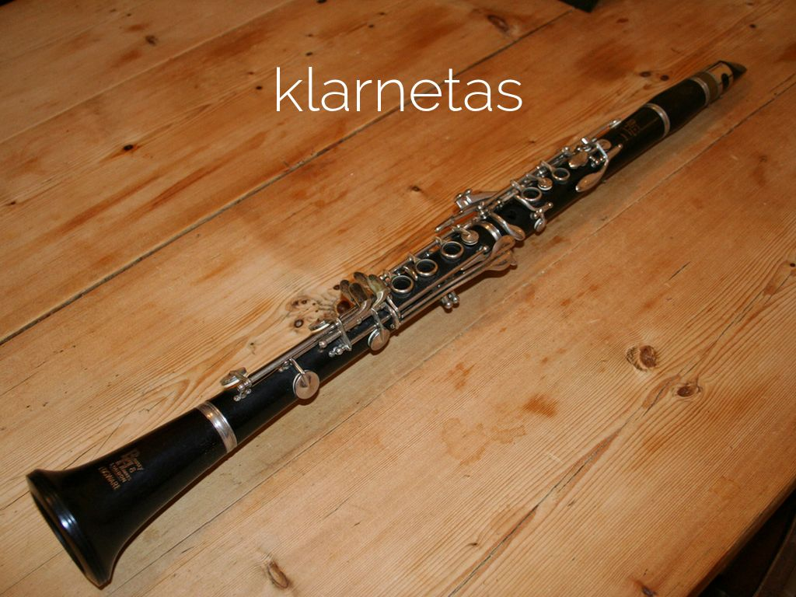

Tamsta - muzikos salonas | Tamsta - Muzikos prekių parduotuvė MUZIKOS INSTRUMENTAI Tai žaisliniai muzikos instrumentai, mikrofonai ir garsiakalbiai.Mes siūlome įvairių gitarų, smuikų, būgnų, akordeonų, sintezatorių ir kelių tipų mikrofonų pasirinkimą. Su šiais vaikiškais muzikos instrumentais jūsų vaikai galės pasijusti tikromis žvaigždėmis ir rengti pasirodymus namuose.
Muzikos instrumentai - milgreta.lt Muzikos instrumentai- el. parduotuvė ir muzikos prekės internete. Gitaros, klavišiniai instrumentai, perkusija, pučiamieji instrumentai ir daugelis kitų instrumentų. Užsukite - pas mus muzikos instrumentai - gera kaina !!!
Muzikos instrumentai : Objektai : Pagal kategoriją ir temą ... Klavišiniai instrumentai. Instrumentai. Pianinai . Fortepijonai . Sintezatoriai . Stacionarūs skaitmeniniai pianinai . Portatyvūs skaitmeniniai pianinai ... Be UAB "MUZIKOS FAKTORIUS" sutikimo draudžiama kopijuoti ir platinti svetainėje esančią informaciją. El. parduotuvių nuoma: verskis.lt.
Muzikos faktorius Muzikos instrumentai Atsarginės dalys Ausinės Garso kolonėlės Garso procesoriai Gitaros Grotuvai-rašikliai Instrumentų efektai Jungtys Kabeliai Kiti instrumentai Klasikiniai styginiai KLasikiniai styginiai instrume Klavišiniai Kompiuterija MIDI Mušamieji Pučiamieji Sempleriai Stovai, spintos, krepšiai Studijiniai monitoriai
Keisčiausi muzikos instrumentai | PrieKavos.lt Muzikos instrumentai ir muzikos prekės Tamsta internetinėje parduotuvėje. Gitaros, būgnai, klavišiniai, pučiamieji, styginiai, pro audio ir kita.
Gitaros | Muzikos instrumentai - muzikosgarsai.lt Muzikos instrumentai ir jų dalys. Pučiamieji muzikos instrumentai skirtomi į medinius ir varinius. Mediniams muzikos instrumentams priskiriami tokie instrumentai kaip išilginė fleita, skersinė fleita, klarnetas, obojus, saksofonas, fagotas ir t.t. Variniams muzikos instrumentams priskiriami trimitai, kornetai, fliugelhornai, trombonai, althornai, tenorhornai, eufonijos, tūbos.
Muzikos prekių parduotuvė - Midiaudio „Royalty free“ Muzikos instrumentai vaizdas: Smiling young man with eyes closed playing guitar while leaning on wall at Santa Cruz, Seville, Spai . dgof00886 [RF] Westend61 „Royalty free“ Muzikos instrumentai vaizdas: Smiling girl playing piano with brother in backyard .
Muzikos instrumentai, priedai internetu | pigu.lt Rubrikoje yra matomos įmonės, kurių veiklos sritis - įvairūs muzikos instrumentai, reikmenys, jų gamyba, pardavimas, importas, eksportas ar remonto darbai.
Muzikos instrumentai - ABC žaislai Lauko muzikos instrumentai. Lauko muzikos instrumentai darželiui, mokyklai. Instrumentai skirti groti auke. 1 - 32 iš 40 -18 % Lauko muzikos instrumentų komplektas Rainbow Trio Ensemble. Kodas: Rainbow ...
Muzikos instrumentai
2020.10.29 08:32

85 207 7920 info@abczaislai.lt Kontaktai Mano paskyra 0 €0.00 Jūsų pirkinių krepšelis yra tuščias! Navigacija Pristatysime per 1 darbo dieną Žaislai ir prekės vaikams Dėlionės Figūrėlės Gumytės, karoliukai, rankdarbiai Karinės tematikos žaislai, ginklai Konstruktoriai Kosmetika ir aksesuarai Kostiumai, karnavaliniai reikmenys Kūrybiniai žaislai Lėlės Mediniai žaislai Moksliniai, mokomieji žaislai Mokyklinės prekės Muilo burbulai Muzikos instrumentai Pigūs žaislai Planšetiniai žaidimų kompiuteriai Plastikiniai žaislai Pliušiniai žaislai Profesiniai žaislai Saldumynai Saulės energija varomi žaislai Stalo sporto žaidimai Sūpuoklės Traukinukai, bėgiai, trasos, garažai Virtuvėlės, indai, buitinė technika Vonios žaislai Šviesos stalai Žaidimai Žaislinės transporto priemonės Žaislų naujienos RC žaislai RC automobiliai RC dronai ir sraigtasparniai RC gyvūnėliai ir robotai RC laivai RC statybų technika RC tankai RC žemės ūkio technika Lauko žaislai Baseinų chemija Baseinų priedai Baseinų siurbliai ir filtrai Batutai ir jų priedai Dviratukai, minamas transportas Elektriniai automobiliukai Karkasiniai baseinai Kiemo, lauko, sodo žaislai Nameliai, sodo palapinės Paspiriamos mašinėlės ir dviratukai Paspirtukai Pripučiami baseinai Pripučiamos ir paplūdimio prekės Riedlentės Riedučiai Riedžiai Smėlio dėžės, smėlio žaislai Sūkurinės vonios ir jų priedai Triratukai Turizmas Vaikiški baseinai Valtys ir baidarės Žaidimų aikštelės ir sūpynės Vaikų sportas Apsaugos, pirštinės, kita Futbolas, vartai, priedai Tinklinis, badmintonas Vaikiški šalmai Vaikų sporto įranga ir priedai Žaislai ir prekės kūdikiams Barškučiai ir kramtukai Karuselės, projektoriai virš lovytės Kilimėliai, patiesalai, gultai Lavinantys, interaktyvūs žaisliukai TOP prekės kūdikiams Žaislai pagal amžių 0-12 mėn. vaikams 12-36 mėn. vaikams 3-4 metų vaikams 5-7 metų vaikams 8-13 metų vaikams 14 metų ir daugiau vaikams Informacija, kontaktai Apie mus Apsipirkimo sąlygos ir taisyklės Kaip sekti užsakymą ir jo būseną? Atsiskaitymo būdai Prekių ir pinigų grąžinimas Prekių pristatymas Privatumo politika Kokybės garantija, garantinis aptarnavimas Pasiūlymas ugdymo įstaigoms Kontaktai ir rekvizitai Akcijos Mano paskyra 0
Muzikos instrumentai
Pagrindinis Žaislai ir prekės vaikams Muzikos instrumentai Filtruoti: Nesurikiuota Naujausios viršuje Pigiausios viršuje Brangiausios viršuje A-Ž pagal abėcėlę Ž-A pagal abėcėlę Geriausiai įvertintos Rodyti: 32 64 96 128 160 Akcija - 17% Muzikos instrumentų rinkinys kuprinėje €24.99 €29.99 Akcija - 18% Vaikiškas didelis sintezatorius Nuo €39.99 €48.99 Daugiau Akcija - 31% Didelis akordeonas vaikams, mėlynas €54.50 €79.03 Akcija - 25% Elektrinė gitara Rock Nuo €16.22 €21.69 Daugiau Akcija - 9% Gitara Ukulėlė €15.42 €16.95 Akcija - 11% Karaoke mikrofonas Nuo €16.04 €17.98 Daugiau Akcija - 13% Karaoke mikrofonas Nuo €15.90 €18.31 Daugiau Akcija - 11% Megafonas su sirena Nuo €14.69 €16.43 Daugiau Akcija - 8% Mikrofonas Karaoke , Kaichi Nuo €16.23 €17.69 Daugiau Akcija - 9% Muzikinis mokomasis rinkinys ksilofonas su kamuoliukais, Huile Toys €16.26 €17.82 Akcija - 34% Plastikinė gitara vaikams UKULELĖ €18.42 €27.94 Akcija - 9% Spalvotas būgnelis vaikams €15.53 €17.03 Akcija - 17% Trimitas vaikams €16.22 €19.61 Akcija - 28% Ukulėlė, žalia €16.50 €22.89 Akcija - 16% Vaikiška ukulėlė €16.22 €19.31 Akcija - 36% Vaikiškas akordeonas €32.62 €51.17 Akcija - 9% Vaikiškas pianinas su 61 klavišu ir mikrofonu Nuo €69.98 €76.93 Daugiau Akcija - 26% Vaikiškas pianinas su 61 klavišu ir mikrofonu 2 Nuo €65.80 €88.50 Daugiau Akcija - 23% Vaikiškas sintezatorius su mikrofonu Nuo €48.75 €63.72 Daugiau Akcija - 29% Vaisinė ukulėlė €9.51 €13.35 Akcija - 18% Žaislinis saksofonas €16.17 €19.61 Akcija - 9% Žaislinis smuikas €14.94 €16.43 Akcija - 34% Žaislinė gitara ir mikrofonas €21.68 €32.86 Akcija - 10% Būgnas su diržu €14.84 €16.49 Akcija - 21% Būgnų komplektas ,rožiniai €23.21 €29.25 Būgnų rinkinys su mikrofonu, raudonas €79.80 Akcija - 22% Būgnų rinkinys, Huile Toys €43.98 €56.18 Būgnų rinkinys, Huile Toys Nuo €50.35 Daugiau Būgnų rinkinys, mėlynas €29.89 Būgnų rinkinys, raudonas €29.89 Daugiafunkcinis būgnų rinkinys €60.90 Akcija - 31% Didelis akordeonas vaikams, juodas €54.50 €79.03 1 2 3 | Rodoma nuo 1 iki 32 iš 95 (3 puslapių)
MUZIKOS INSTRUMENTAI
Tai žaisliniai muzikos instrumentai, mikrofonai ir garsiakalbiai . Mes siūlome įvairių gitarų, smuikų, būgnų, akordeonų, sintezatorių ir kelių tipų mikrofonų pasirinkimą. Su šiais vaikiškais muzikos instrumentais jūsų vaikai galės pasijusti tikromis žvaigždėmis ir rengti pasirodymus namuose. Tokie vaidybiniai žaidimai skatina vaikų vaizduotę, mažina scenos baimės jausmą ir gali būti puiki pradžia žengiant į tikrą muzikos pasaulį.